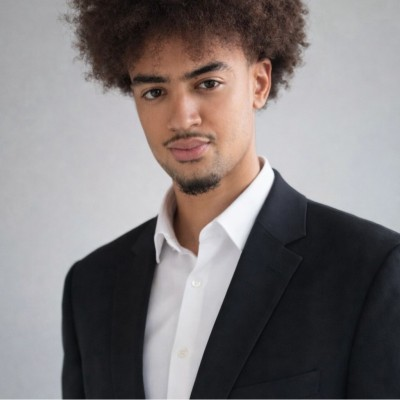

Architecte IT.
Futur ingénieur.
Salut, je suis Noa. Étudiant en 3ème année ASRC. Passionné par le hardware de précision, la création d'infrastructures de zéro et le management d'équipes techniques.
Cursus
Formation-
Bachelor ASRC (3ème année)
Alternance chez Syres Telecom. Déploiements d'infrastructures.
-
BTS CIEL
Cybersécurité, Informatique et Électronique, réseaux.
-
Bac Pro SN (Option RISC)
Réseaux Informatiques et Systèmes Communicants.
Expertises.
L'alliance du terrain et de l'ingénierie.
Réseaux & Infra
Architectures from scratch, VLANs, SIP, serveurs GPO.
Supervision & Sécu
Outils de monitoring proactifs et anticipation des pannes.
Hardware & Terrain
Montage PC de précision, diagnostic sur site et résolutions complexes.
Leadership & Relation Client
Excellent relationnel, écoute active lors des interventions pour cerner les besoins. Capacité naturelle à diriger, organiser les tâches et fédérer les équipes techniques.
Cap sur l'avenir.
Validation du Bachelor ASRC, puis direction le Master. Mon objectif ultime : intégrer un cursus permettant d'étudier au Japon, leader mondial en haute technologie et berceau de l'ingénierie de précision.